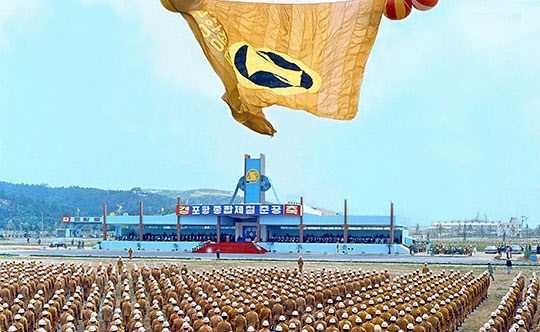
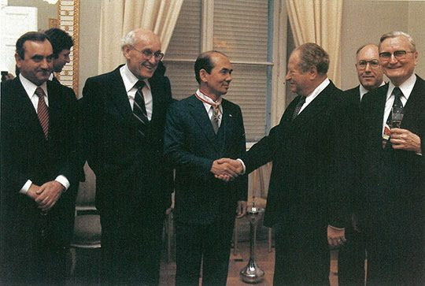
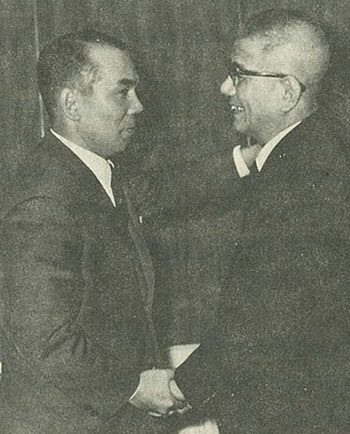

연재일 2015-02-23출처 조선일보 프리미엄조선 연재
1950년대부터 1970년대까지 한국 정․재계가 괴상(怪商)이라 부르기도 했던 아이젠버그가 어떤 인물인가? 아이젠버그는 한국 제철산업과의 관련만 봐도 1954년 이승만 대통령이 의욕적으로 추진한 대한중공업공사 평로 제강공장 프로젝트에도 등장했다.(연재 24회) 물론 그는 1960년대 한국에서 기세가 등등했다. 1964년 12월 6일 박정희 대통령이 서독 방문 장도에 올랐을 때는 첫날부터 호텔 로비에서 기다린 사내가 아이젠버그였다. 그 모습이 조갑제의 『박정희』에는 이렇게 담겨 있다.
[12월 7일 오전 10시 30분, 숙소인 쾨니히스호프 호텔에 도착하자 뤼브케 대통령이 박 대통령을 안내하여 들어섰다. 박 대통령 곁에서 통역을 하려고 바짝 따라 붙었던 백영훈 통역관의 증언]
“부동자세로 선 경호원들만 보이는 로비에 웬 서양인이 의자에서 신문을 읽고 있었습니다. 황당했지요. 그 순간 그는 신문을 천천히 접으며 박 대통령을 바라보고 웃더군요. 유대인 거상 아이젠버그였습니다. 순진한 박 대통령은 무척 반가워하면서 저를 통해 뤼브케 대통령에게 아이젠버그를 소개해 주었습니다. ‘우리나라를 잘되게 하기 위해 백방으로 도움을 주고 계신 아이젠버그 씨입니다’라고 말입니다. 그날 이후 박 대통령의 서독 체류 기간 내내 아이젠버그는 박 대통령 뒤를 따라다녔습니다.”
그 막강한 유대인을 박태준도 잘 알고 있었다. 1961년 11월 그가 국가재건최고회의 상공담당 최고위원으로 활약한 시절에 정래혁 상공부 장관이 독일을 방문하여 3750만 달러 상당의 마르크화 차관 도입을 성공시켰는데, 당시에 물밑 교섭을 맡은 이가 아이젠버그였던 것이다. 그때부터 이미 박태준은 아이젠버그를 빨리 내쳐야할 ‘필요악’으로 봤다. 나라가 가난하니 그따위 구전으로 더럽게 자기 뱃속을 채우는 로비스트를 활용할 수밖에 없다는 점을 통탄스러워했다.

박태준과 아이젠버그의 첫 대결은 1970년 초반 포철의 중후판공장 건설에서 이뤄졌다. 재일교포가 포철 울타리와 가까운 자리에 포철 착공식에 앞서 ‘조일제철’이라는 중후판공장을 세우기로 했다. 조일제철 건설에서 차관 알선은 아이젠버그가 맡았고, 한국정부는 지불 보증을 섰다. 아이젠버그가 소개한 파트너는 파나마 유나이티드개발회사였다. 그러나 그 회사의 실제 소유자는 바로 아이젠버그였다. 그러니까 그는 조일제철 건설 자금에서 이권을 이중으로 뜯어먹은 것이었다.
포스코 첫 공장인 중후판공장. 박태준은 오스트리아의 푀스트 알피네와 추진하는 외자 도입 및 설비 협상 과정에 오스트리아 국적도 가진 아이젠버그의 개입을 철저히 차단했다. 박태준이 포스코의 외자담당을 데리고 직접 뛰어다녔다. 그 차관을 승인한 오스트리아 국립은행 총재의 증언을 앞에서 들었지만(49회), 박태준은 오스트리아 철강인과 금융인을 ‘진정성’으로 감동시켰다. 그러나 문제는 조일제철이었다.
가난한 나라의 약점을 파고든 아이젠버그의 그것을 박태준은 헌신짝처럼 차버려야 했으나 한국정부가 지불보증을 섰으니 포스코가 흡수(합병)하는 수밖에 없었다. 조일제철 흡수, 이것은 박태준의 포스코가 자금과 정력을 낭비한 유일한 사례였다.
조일제철 배후에는 한국 권력자들이 도사리고 있었다. 대통령도 함부로 다루지 않는 아이젠버그를 활용한 그들은 스위스 대사를 지낸 여당의 K의원과 군의 요직을 거쳐 정부 고위직도 지낸 더 막강한 권력자 J였다.

중후판공장 준공식(1972년 7월 4일)을 앞둔 어느 날이었다. 느닷없이 아이젠버그가 박태준에게 전화를 걸어왔다. 왜 자신에게는 여태껏 준공식 초청장이 오지 않느냐는 것. 박태준은 어이가 없었다. 가난한 나라의 돈을 너무 많이 먹었으니 그걸 게워내면 초청하겠다는 말이 목구멍까지 치밀었다. 아이젠버그가 한국 고위층의 이름을 들먹였다. 일종의 무력시위에다 협박이었다. 박태준은 일절 반응하지 않았다.
이 교활하고 거만한 인간에게는 끝까지 본때를 보여줘야 한다고 단단히 마음만 먹었다. 그는 끝내 아이젠버그에게 초청장을 보내지 않았다. 당신과는 더 이상 어떤 관계도 맺지 않겠다는 강한 메시지였다.
아직 유신헌법이 등장하기 전에 아이젠버그가 포스코 설비를 노리며 날뛰었던 배경에는 ‘포스트 박정희’를 노리는 권력 암투도 작동하고 있었다. 박정희 후계 경쟁자로는 K, L, J가 꼽혔다. 항간에는 “K, L은 자금이 많지만 J는 자금이 없어서 어쩌나” 하는 소문이 돌았다. 여기서 J에게 포스코는 ‘정치자금’의 매력적인 원천으로 보일 수 있었다. 박태준을 포스코에서 뽑아내고 자기 사람을 심게 된다면 앞으로 엄청난 공사들이 창창하게 남았으니 얼마든지 파이프를 꽂을 수 있다고 판단했을 것이다.
조일제철을 통해 톡톡한 재미를 챙기긴 했으나 포스코의 중후판공장 준공식에 초청도 받지 못함으로써 박태준에게 자존심을 크게 다친 아이젠버그. 실상 그는 1970년 초부터 포항제철소 설비들을 노리며 음모를 꾸몄다. 1969년 12월 3일 대일청구권자금 전용과 제철기술 지원 등에 대한 한일기본협정 조약, 1970년 4월 1일 포항제철소 착공식. 그 넉 달 사이에 포스코는 일본 철강설비업체들과 구매계약을 진행했다.
아이젠버그는 몸이 달았다. 그의 눈에는 박태준보다 먼저 손봐야 할 장애물이 있었다. 영일만 현장에 파견된 일본기술단 아리가 단장이었다. 아리가는 박정희와 박태준의 종합제철에 대한 ‘진정한 의지’를 충분히 이해하고 존중하는, 제철설비에 대해 빠삭하게 아는 양심적인 엔지니어로서, 1억 달러 넘는 포철 1기 설비구매에서 중요한 역할을 담당하고 있었다. 아이젠버그는 아리가부터 뽑아내고 싶었다.
아리가 대신 자기 입맛에 맞는 인물을 박아두는 것이 포스코에 좋은 뒷구멍을 확보하는 방법이다, 이 계산이었다.
때마침 아이젠버그에게 절호의 기회가 왔다. 일본 철강업계의 합병이 그것이었다. 1970년 4월 1일 포스코가 착공식을 거행한 그날, 야하타제철과 후지제철이 합병한 ‘신일본제철’이 탄생했다. 아리가는 후지 출신, 신일본제철 최고경영진은 야하타 출신. 아리가에게는 아주 불리한 여건이었다. 아리가는 영일만을 떠나 후지제철로 복귀하게 될 것인가?
